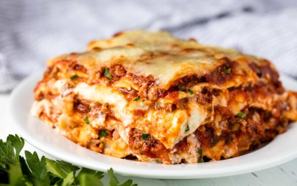

Lasagna

Description
Making lasagna can be time-consuming, but the results are well worth the wait.
You'll find a detailed ingredient list and step-by-step instructions in the
recipe below, but let's go over the basics:
Ingredients
-
Meat: This super meaty lasagna has sweet Italian sausage and lean ground
beef.
-
Onion and garlic: An onion and two cloves of garlic are cooked with the meat
to add tons of flavor.
-
Tomato products: You'll need a can of crushed tomatoes, two cans of tomato
sauce, and two cans of tomato paste.
-
Sugar: Two tablespoons of white sugar add subtle sweetness and enhance the
flavor of the sauce.
-
Spices and seasonings: This lasagna recipe is flavored with fresh parsley,
dried basil leaves, salt, Italian seasoning, fennel seeds, and black pepper.
- Lasagna noodles: Use store-bought or homemade lasagna noodles.
-
Cheeses: Parmesan, mozzarella, and ricotta cheese make this lasagna extra
decadent.
-
Egg: An egg helps bind the ricotta so it doesn't ooze out of the lasagna
when you cut into it.
Steps
- Step 1: Gather all your ingredients.
-
Step 2: Cook sausage, ground beef, onion, and garlic in a
Dutch oven over medium heat until well browned.
-
Step 3: Stir in crushed tomatoes, tomato sauce, tomato
paste, and water. Season with sugar, 2 tablespoons parsley, basil, 1
teaspoon salt, Italian seasoning, fennel seeds, and pepper. Simmer, covered,
for about 1 1/2 hours, stirring occasionally.
-
Step 4: Bring a large pot of lightly salted water to a
boil. Cook lasagna noodles in boiling water for 8 to 10 minutes. Drain
noodles, and rinse with cold water.
-
Step 5: In a mixing bowl, combine ricotta cheese with egg,
remaining 2 tablespoons parsley, and 1/2 teaspoon salt.
-
Step 6: Preheat the oven to 375 degrees F (190 degrees C).
-
Step 7: To assemble, spread 1 1/2 cups of meat sauce in the
bottom of a 9x13-inch baking dish. Arrange 6 noodles lengthwise over meat
sauce. Spread with 1/2 of the ricotta cheese mixture. Top with 1/3 of the
mozzarella cheese slices. Spoon 1 1/2 cups meat sauce over mozzarella, and
sprinkle with 1/4 cup Parmesan cheese.
-
Step 8: Repeat layers, and top with remaining mozzarella
and Parmesan cheese. Cover with foil: to prevent sticking, either spray foil
with cooking spray or make sure the foil does not touch the cheese.
-
Step 9: Bake in the preheated oven for 25 minutes. Remove
the foil and bake for an additional 25 minutes.
- Step 10: Rest lasagna for 15 minutes before serving.